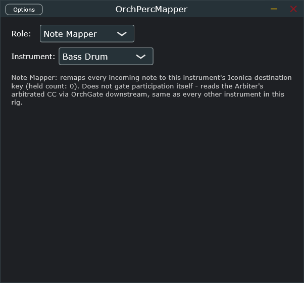

OrchNoteMapper and OrchGate solve range-folding and per-instrument participation, but neither knows that a real orchestra shares its percussion section — 3–4 players covering 12 instruments, not one dedicated player each. OrchPercMapper adds that: one shared Arbiter instance pools participation with a real minimum hold-time, and one Note Mapper instance per unpitched instrument fixes every incoming hit to that instrument's real destination key.
Only 2 real parameters — everything else about pool behavior (hold time, allocation) is fixed, deterministic logic, not something you dial in.

Switching Role to Arbiter replaces the status text with a live table: occupied pool slots and, per instrument, its gate CC number. Only one Arbiter instance should run at a time — put it on its own "Percussion Pool" bus track downstream of OrchConductor, the same Note Receiver + empty second Note-FX layer pattern already proven for OrchConductor's own fan-out.
| Instrument | Gate CC | Family |
|---|---|---|
| Glockenspiel | 44 | pitched mallet |
| Xylophone | 45 | pitched mallet |
| Marimba | 46 | pitched mallet |
| Vibraphone | 47 | pitched mallet |
| Tubular Bells | 48 | pitched mallet |
| Bass Drum | 56 | unpitched |
| Snare Drum | 57 | unpitched |
| Cymbals | 58 | unpitched |
| Piatti | 59 | unpitched |
| Tam-Tam | 60 | unpitched |
| Tambourine | 61 | unpitched |
| Triangle | 62 | unpitched |
All 12 (5 pitched mallets + 7 unpitched) share the same limited real-player pool — a full orchestra doesn't give the mallets their own dedicated players either. Timpani is excluded by design; it has its own dedicated player. The Arbiter arbitrates participation only; it does not gate itself — every instrument's own downstream OrchGate reads the Arbiter's arbitrated CC directly, same as it would read OrchConductor's.
Arbiter: N pool slot(s) occupied is the one line to watch — if it's stuck near the real player
count for your ensemble (3–4), the pool is working as a genuine shared resource, not silently over-allocating.